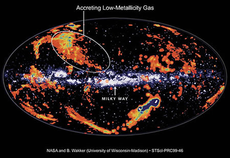

Credit: NASA, B. Wakker, I. Kallick
High Velocity Clouds are interstellar gas clouds that are moving at speeds substantially different (up to several hundred km/s) to the rotation of the disk of the Milky Way galaxy. Composed primarily of neutral hydrogen, they are located outside of the Galactic plane and are thought to be clouds of material falling into our Galaxy from the outside.
Where these clouds originate is a topic of much research, and it appears that they may have a variety of origins. Some have been shown to have much lower metallicities than what we find in the Milky Way, suggesting that they may have originally been part of another galaxy which was disrupted by a close encounter with the Milky Way. For example, it is thought that many of the southern high velocity clouds originated in the Magellanic stream – a trail of gas torn out of the Magellanic Clouds in an interaction with the Milky Way hundreds of millions of years ago. Alternatively, they could be left over material from the formation of our own Galaxy that is only now being incorporated into the Milky Way.
Other researchers have gathered evidence showing that at least some high velocity clouds contain heavy elements, and in particular, significant amounts of iron. This suggests that these clouds could previously have been ejected from the Galaxy (in a galactic fountain) by supernova explosions, and are only now returning to the Milky Way.